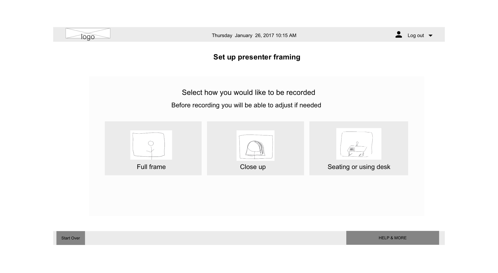

Studio GUI
Touch User interface that controls a greenscreen self record studio
Role
Lead UX/UI Designer. In charge of designing user experience and graphical elements.
Overview
The Youstar Studio is a self recording room that any user in the university can utilize to record themselves. The system is equiped with a greenscreen, professional recording lighting, camera, sounds system. The user only interacts with a contorl screen that with a simple graphic interface walks them through the different recording scenarios they would like to utilize; after the user selects their recoring style the system automatically will be set up to the specified parameters and be ready for an hour long recording.
Users can record, pause and save their recording at any point. The user can bring their own devices to the room and utilize any media they wish to incorporate in their recording. The room is also equiped wiht a full desktop computer which they can utilize too.
My process
Starting with the initial requirements of desire functionality I worked with developers and users to determine a flow for the system. The chart above is the what we determined the system should follow to create a simple and usable recording experince for any level of user.
Once the desired flow was established I created paper wireframes with screens showing the functionality that it will contain. The wireframes where shown to a group of users and adjusted into digital mockups where a more determined place for items where established.
User testing was conducted with designed interfaces on a click through prototype, which was very helpful to gather feedback and see how users would interact with the interface. Users found the system easy to understand and any level of expertise could utilize the studio.
Collaboration with devs. In order to deliver design to developers I created a simple HTML CSS page where I could show elements, colors, typography and examples of interaction. Where code gaps existed I created simple interaction videos to represent the desire action and communicated as detailed as possible so developers could implement. In this site I also attached the assets necessary so in delivering one web file all the elements where hosted in the same place.
By deliveing assets in this manner allowed us to communicate more clearly on what the desired design, and interactions for the project.The site was hosted in an internal site but here is an example of a similar file I provided. Youstar style guide
Final design was implemented and it has been used from students to faculty and staff at the university. To see a video of how is used please visit the Texas State University YouStar youtube video